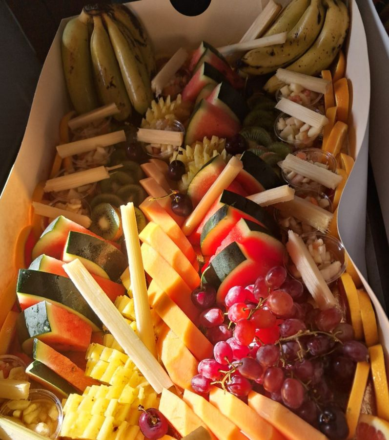

À La Réunion, on aime manger dehors : un pique-nique sous les filaos, un anniversaire au bord du lagon, une sortie d'équipe les pieds dans le sable. Le seul problème, c'est de tout transporter. Bonne nouvelle : Le Vinday livre aussi les repas sur la plage.
Pour quelles occasions ?
- Pique-nique du dimanche en famille
- Anniversaire ou fête entre amis au bord de l'eau
- Journée de cohésion ou team building d'entreprise
- Sortie d'association, de club ou de classe
Les plats qui voyagent bien
Certains plats sont faits pour la plage. Le briani reste chaud longtemps dans sa marmite. Les mine frites et le riz frit se mangent aussi bien chauds que tièdes. Les barquettes individuelles évitent la vaisselle et se distribuent en un instant. Et pour finir, rien ne vaut un grand plateau de fruits frais : pastèque, ananas, papaye.
Barquettes ou buffet ?
Pour un groupe qui bouge, la barquette est imbattable : chacun prend la sienne, rien à couper ni à servir. Pour une vraie fête, on peut installer un buffet avec la vaisselle jetable, plus pratique sur le sable que les vraies assiettes. On vous conseille selon le nombre de convives et l'endroit.
Les plages de l'Ouest, tout près de notre cuisine
Notre cuisine est à Bernica, sur les hauts de Saint-Gilles : les plages de l'Ouest sont à quelques minutes. Boucan Canot, Roches Noires, L'Ermitage, La Saline, Saint-Leu, L'Étang-Salé : on vous retrouve sur place, à l'heure convenue. Et on livre aussi les aires de pique-nique des hauts et le reste de l'île.
Nos conseils pour un repas réussi au bord de l'eau
- Donnez un point de rendez-vous précis : parking, kiosque, poste de secours. Sur une plage, « on est sous les filaos » ne suffit pas toujours !
- Prévoyez de l'ombre et une glacière pour les boissons.
- Pensez aux sacs poubelles : on laisse la plage aussi propre qu'on l'a trouvée.
- Anticipez la météo : gardez un plan B à l'abri en cas d'averse.
- Commandez quelques jours avant, surtout le week-end et pendant les vacances.
Combien de personnes ?
À partir de 10 repas, et jusqu'à 400 personnes pour une grande journée d'entreprise. Le devis est gratuit et le menu s'adapte à votre budget.
Vous organisez une journée d'équipe ? Découvrez aussi nos box repas pour les entreprises de l'Ouest.
Une envie de cuisine mauricienne ?
De la simple barquette au repas complet, de 10 à 400 personnes, livré partout sur l'île. Devis gratuit, adapté à votre budget.